Photos


 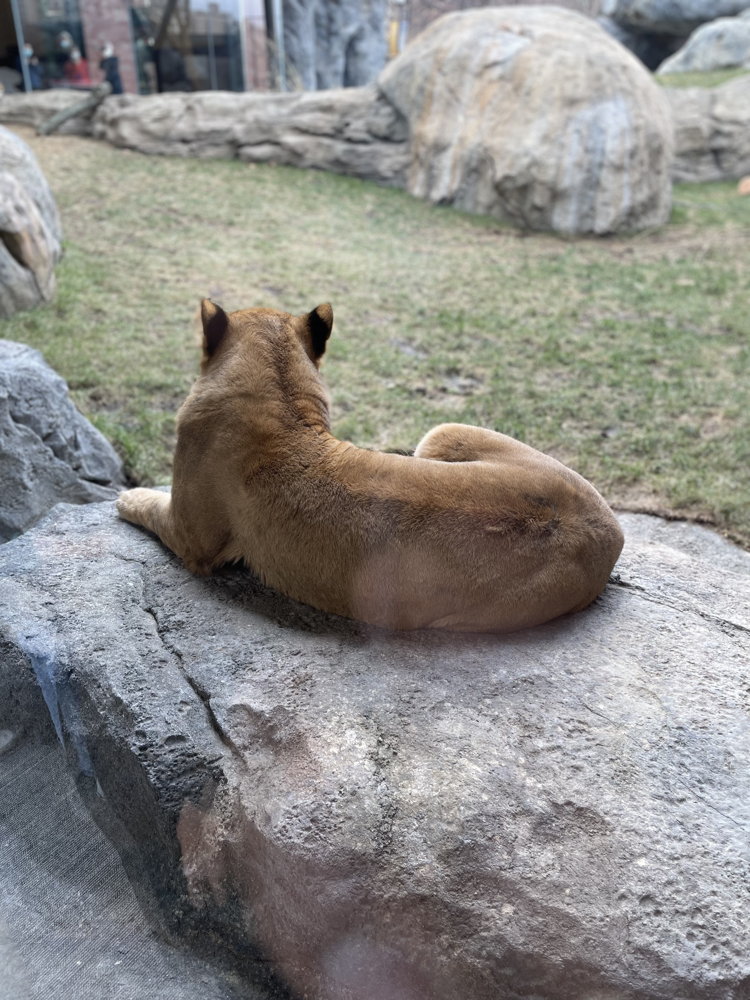
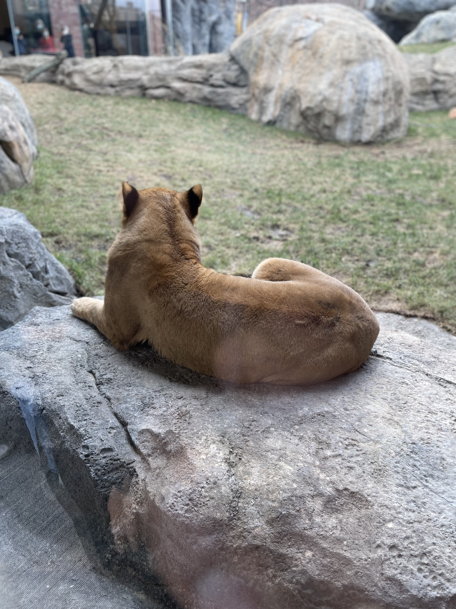

 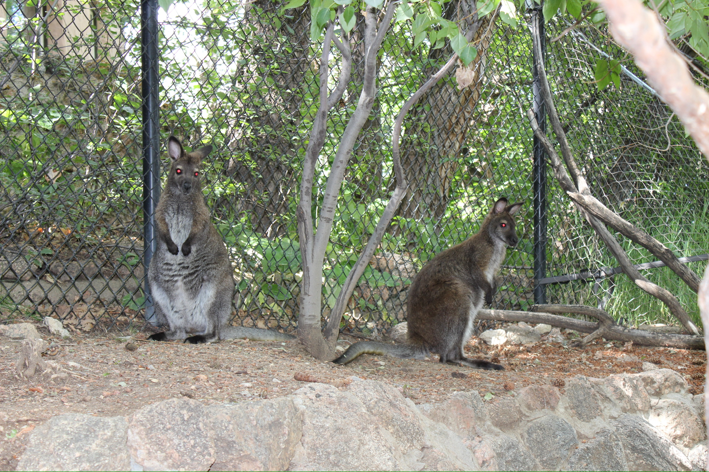
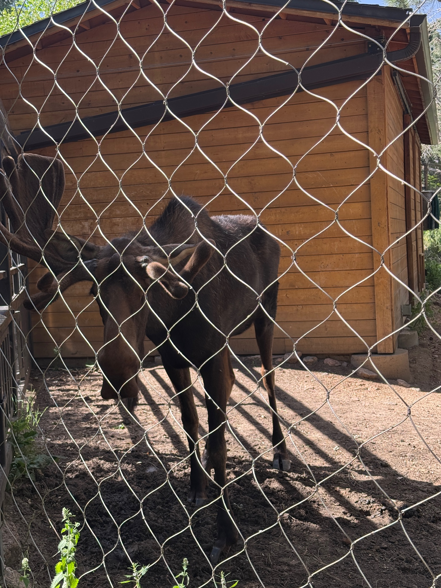
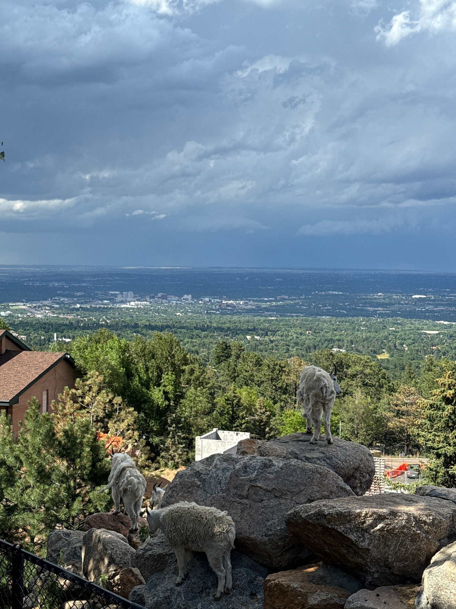
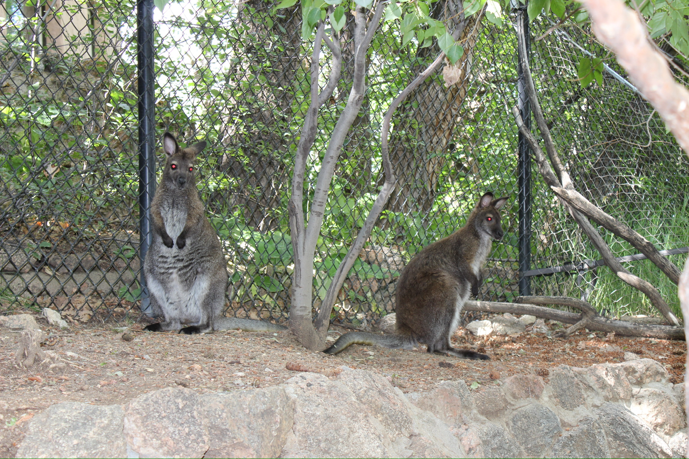
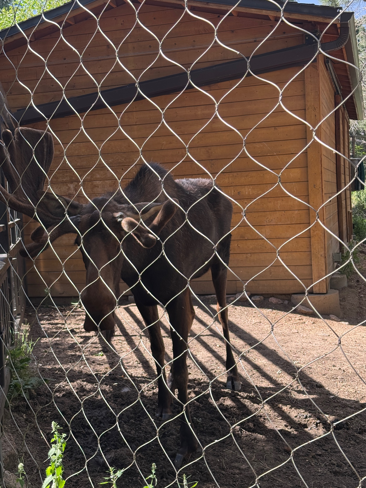
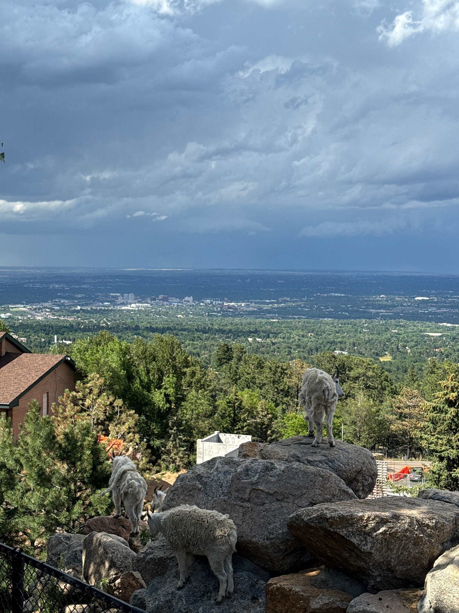
This will include a collection of photos taken during my visits to zoos. Along with my time working at Lincoln Park Zoo in the Conservation Ambassador Board. These images shaped my understanding of captivity and conservation.
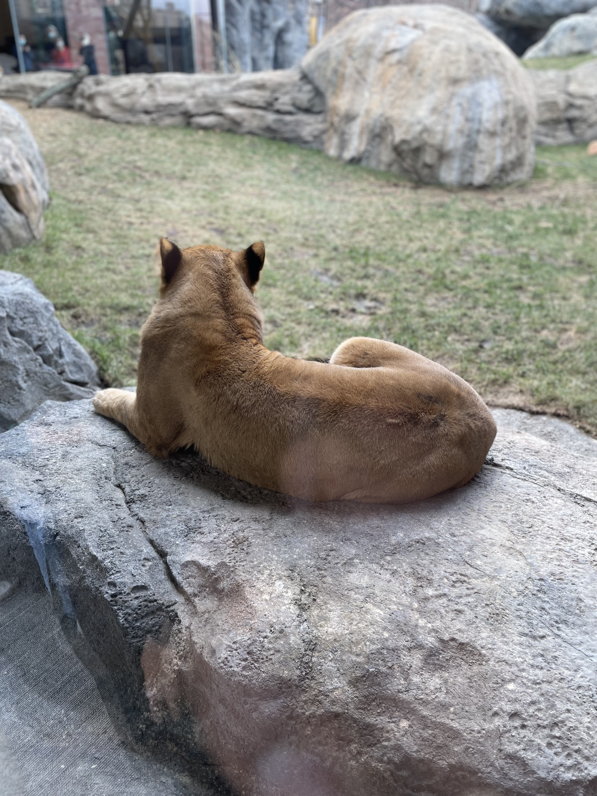
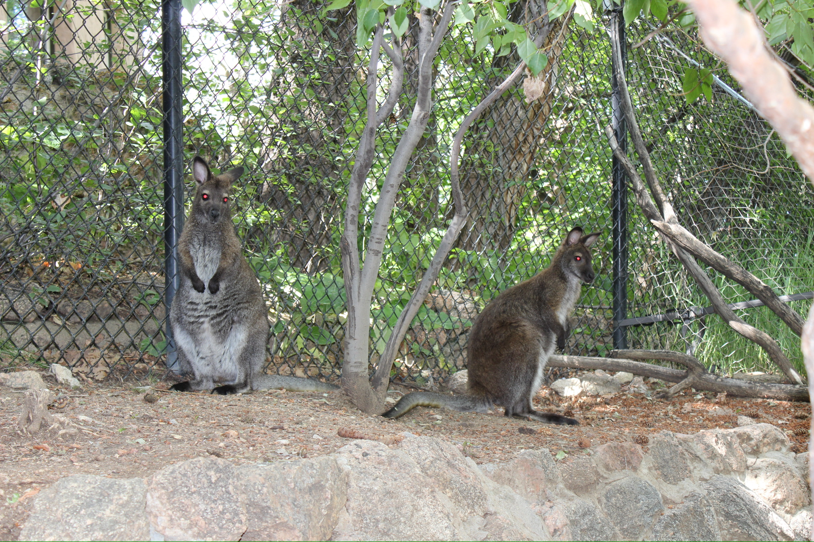
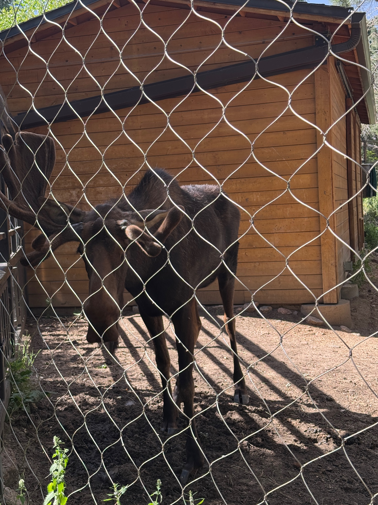
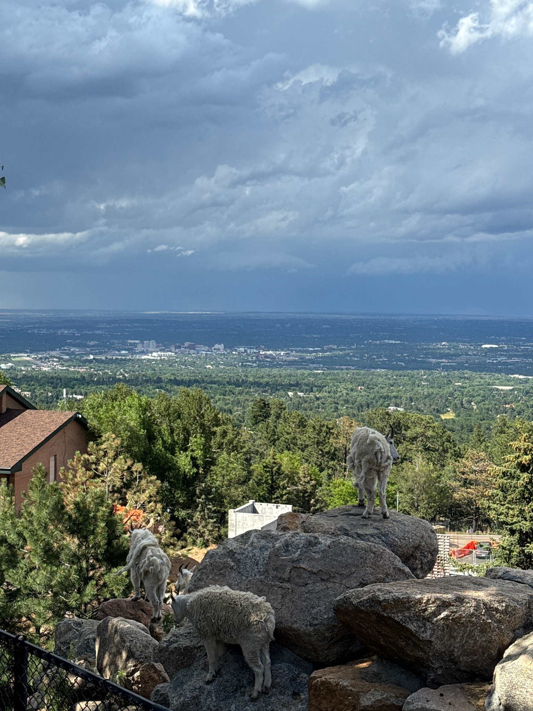